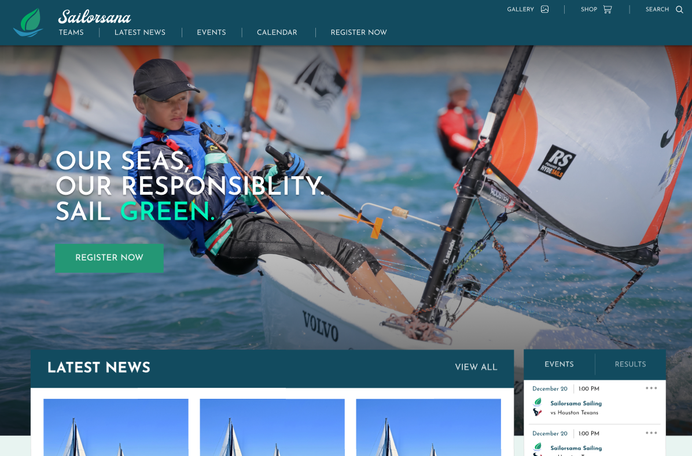
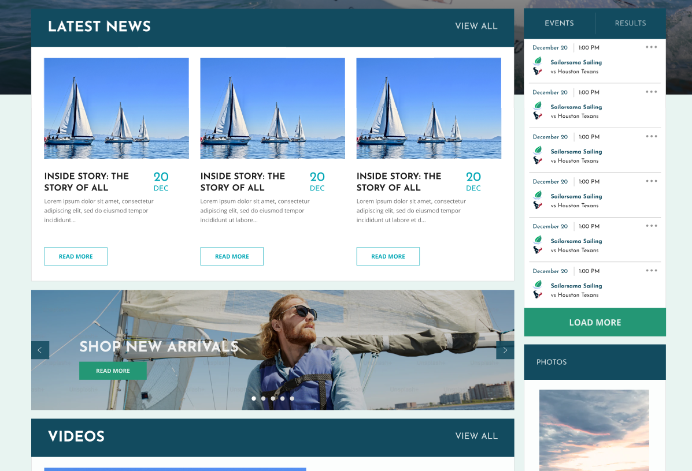
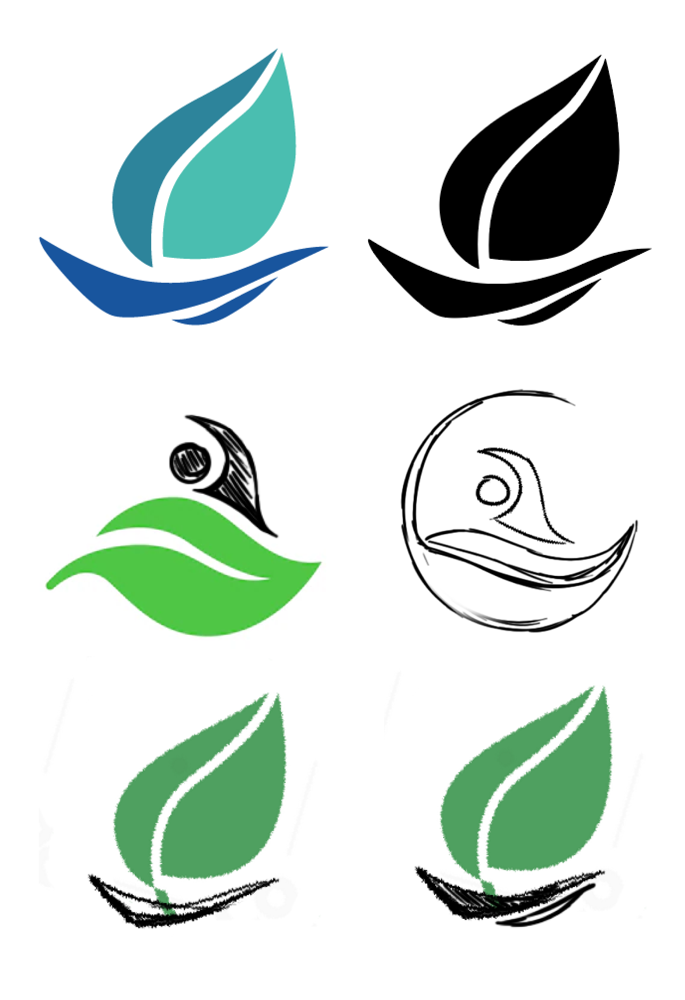
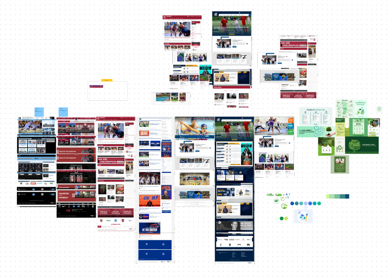
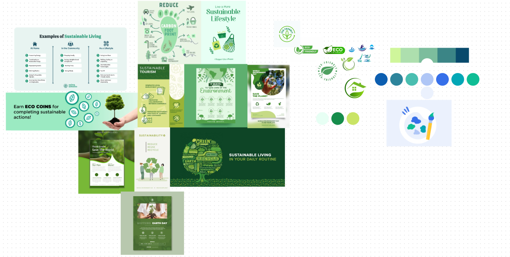

SAILORSANA

Sailorsana is a fictional Sports Community themed around sustainable living. This project just consists of a landing page which I designed and developed in just 2 days.
Figma Prototype Moodboard
LOGO
I made the logo in Adobe Illustrator. The logo was surprisingly difficult to design since I was torn between two styles: the typical Varsity sports logo style that I normally associate with sports, or something that felt more modern and aligned with the theme of sustainable living. Here are some of the drafts I made:
REFERENCES
The first step of the process was creating a huge mood board to get as many references for the website as possible for a competitor analysis. I gathered references for sustainable living and eco-friendly styles. However, I initially wasn't a fan of using green, due to its passive connotations which wouldn't make a good sports team colour.
 WIREFRAMES